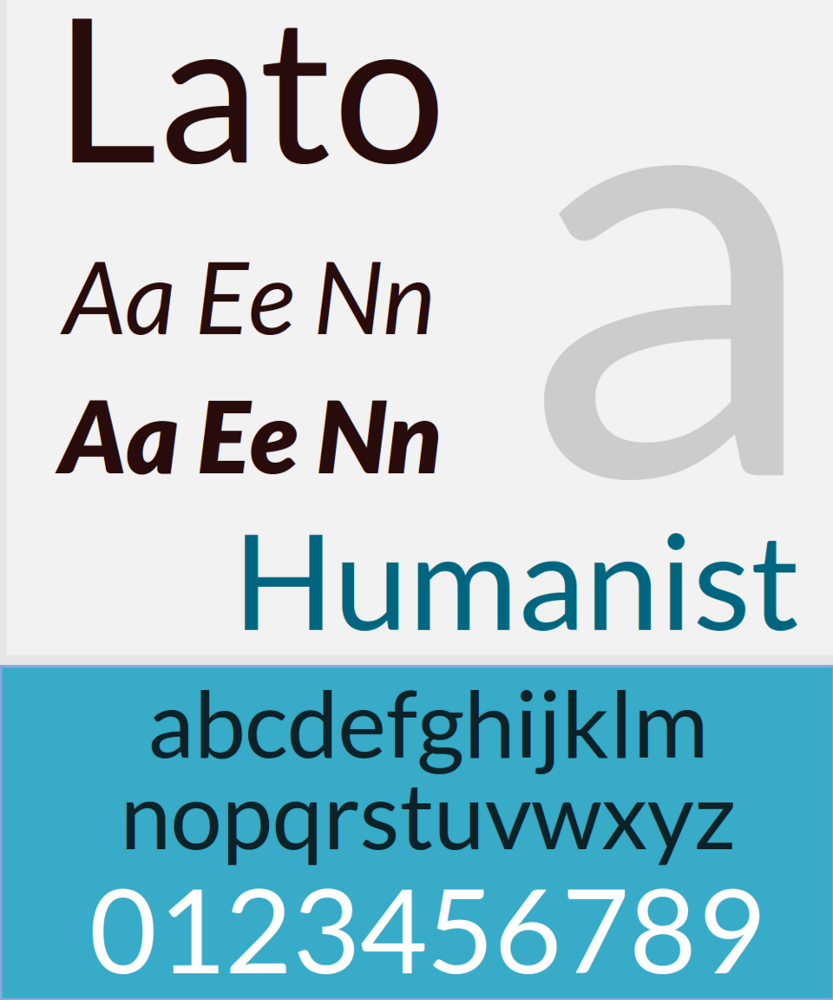

References / Typeface / 228
Lato typeface
The free humanist sans-serif of 2010 that became a default text face of the flat web.
- Source
- Wikipedia: Lato (typeface)
- Creator
- Łukasz Dziedzic
- Made
- 2010
- Style
- Flat design (web text face; agent-proposed, not yet reviewed by a person)
- Moods
- Friendly, clear, warm
- Evidence
- Inspected a 960 × 1152 render of the specimen File:Lato-font.png (by Gtk3, 2012, PD-textlogo) and stored it. Its use in the Flat UI kit was read in the kit’s
_variables.scssand measured on its demo page. - Reviewed
- Rights
- Open license, stored. License: public domain. Rights policy

Context
“Lato is a humanist sans-serif typeface designed by Łukasz Dziedzic. It was released in 2010.” It was made for a Polish bank, shelved, and released the same year under the SIL Open Font License (Wikipedia)).
After it was added to Google Fonts it became, by August 2018, the third most served font there, after Roboto and Open Sans. It has nine weights from hairline to black, each with an italic.
Designmodo’s Flat UI kit sets $font-family-base: "Lato", Helvetica, Arial, sans-serif and ships Lato Light, Regular, and Black (_variables.scss). Lato set 93% of the text measured on the kit’s demo page.
Observed
- The specimen shows “Lato” large in a dark brown regular weight, italic and bold italic pairs (Aa Ee Nn), a very large pale gray “a”, and the word “Humanist” in teal.
- A teal band below holds the lowercase alphabet in dark type and the figures 0–9 in white.
- Letters have open apertures and slightly rounded stroke ends. The a is double-storey and the g is single-storey.
Why it belongs
Measured with tools/image-traits.py; see the measurement file. Lato gave web designers a free, warm sans-serif with light and black weights, which let them follow both the light-heading Metro look and the bold-heading look of the Flat UI kit.
Borrow
For a flat interface on the web, pair a humanist sans-serif such as Lato in Light for large headings with Regular for text.
Measured
Machine-extracted by tools/image-traits.py on . Full measurement.
- Mean chroma
- 0.18
- Palette
- #f2f2f2 53%
- #37abc8 27%
- #cccccc 5%
- #2b0e0d 4%
- #0b2127 2%
- #e6e6e5 1%
- #ffffff 1%
- #01657f 1%

